Why you'll love it
Swamp Adventure is a quick-to-learn, hard-to-put-down arcade game built for players of every age.
Swipe to steer
The frog hops on its own — your job is to drag the lilypad under it before it lands. One finger, no buttons. Easy to pick up, brutal to master.
A swamp full of danger
Birds, hawks, alligators and pufferfish arrive faster every ten seconds. Some you dodge, some you stomp — knowing which is the whole game.
Achievements & leaderboards
26 achievements, Google Play leaderboards, and a combo multiplier that turns a clean streak into a massive score.
See it in action
Charming hand-drawn art and frantic, satisfying gameplay.
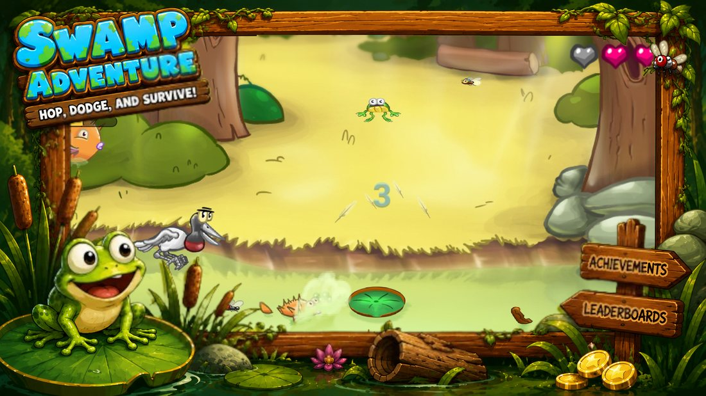
How to play
There are no buttons and no jump control. The frog hops by itself, and everything you do happens in the split second it is in the air.
-
Drag the lilypad
Your finger controls the lilypad, not the frog. Slide it under the frog before it comes down — miss, and the frog lands in the water and loses a life.
-
Land on something alive
A lilypad is safe, but a bird, a hawk or an alligator's back is worth far more. Landing on an enemy kills it and keeps your streak going.
-
Build the combo
Every kill in a row raises your combo, and the combo multiplies every point you score afterwards. Touch a plain lilypad and the combo resets to zero.
-
Survive the ramp
The level goes up every ten seconds, forever. New enemy types unlock as you climb and the swamp keeps filling up — there is no finish line, only your best run.
Who lives in the swamp
Five creatures share the water, and each one wants something different from you. Learning which to stomp and which to flee is most of the skill curve.
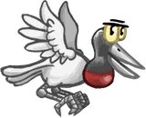
Birds
The swamp's bread and butter — jaburu storks, the long-billed waders of the Brazilian wetlands. They flap across in loose arcs from the very first level and are the easiest way to keep a combo alive. Up to eight can share the screen at high levels.
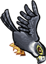
Hawks
They show up around level 6 and dive far faster than the birds. Worth ten times as much, but they cross the screen so quickly that timing a landing on one is a genuine skill check.
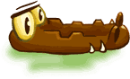
Alligators
From level 10 onwards a gator patrols the water. You can ride it by landing on its back — but if your lilypad drifts into its head, the frog is eaten instantly and the run ends, no matter how many lives you had.
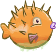
Pufferfish
Spiky, and unkillable by normal means — touching one costs a life. Only an invincible frog can pop a pufferfish, and doing so is worth a hundred points. Up to four bob around at once in the late game.
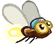
Bugs
Not a threat — a resource. Get close and the frog's tongue shoots out on its own to snatch one. Bugs are the engine behind both extra lives and invincibility, so chasing them is always worth the detour.
Power-ups and extra lives
Swamp Adventure has no shop-bought consumables mid-run. Every advantage you get, you earn with your tongue.
Invincibility
Eat enough bugs and the frog flashes and turns invincible for a few seconds. While it lasts, nothing in the swamp can hurt you: you plough straight through alligator backs, and pufferfish — normally lethal — pop on contact for 100 points each.
Invincible kill chains
Kills made during invincibility stack a separate bonus on top of your combo: each consecutive one adds another ten points to every kill that follows. A well-spent invincibility window is where the big scores come from.
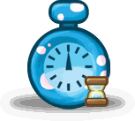
The Bullet Time clock
A rare hourglass drifts through the swamp. Grab it and the whole world decelerates to a tenth of its speed — enemies, animations, everything but you. It is the only way to untangle a screen that has become impossible, and stacking twenty of them in one run is its own achievement.
Extra lives
Every 10 bugs eaten grants a life back, up to your maximum. If you are already at full health the life converts into 50 bonus points instead, so bugs are never wasted.
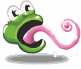
Tongue reach
The frog's tongue has a fixed radius and fires automatically at the nearest bug inside it. Upgrading its size in the store widens that radius, which quietly makes every other power-up easier to reach.
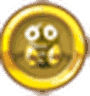
Coins and upgrades
Every 100 points you score becomes a coin. Spend them on permanent upgrades: longer invincibility, more frequent clocks, longer freezes, a bigger tongue, or a higher maximum life count.
Three ways to play
Same swamp, very different pressure.
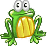
Normal Mode
Start at level 1 and climb. Enemies unlock gradually — birds from the start, hawks around level 6, alligators at level 10, a second gator at level 30 — so the swamp teaches you as it tightens.
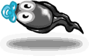
Baby Mode
Made for small kids. You can never lose, alligators stay out of the water entirely, and the difficulty plateaus so the screen never becomes overwhelming. Achievements are switched off in exchange.
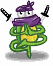
Hard Mode
Start at level 10, with the hawks and the first alligator already in play, and every point worth 1.5x. For players who find the opening minutes of a normal run too quiet.
Achievements to chase
Twenty-six Google Play achievements, most of them asking you to play in a specific way rather than simply play a lot.
A Peaceful NINJA Frog
Reach level 20 without killing a single bird, pufferfish or alligator. A whole pacifist run, with none of the easy combo points.
Just Like C. Norris
Kill 15 enemies while invincible — the hardest scoring feat in the game.
Eat ALL The Bugs!
Eat 100 bugs in one match. That is ten extra lives and a long string of invincibility windows along the way.
King Of The Lake
Reach level 50 — roughly eight minutes of unbroken survival in a swamp that never stops filling up.
Like Dr. Brown
Collect 20 Bullet Time clocks in a single run. They spawn rarely, so this one rewards upgrading the clock probability first.
Master Jumper
Chain a 20-kill combo without touching a plain lilypad. Twenty consecutive landings on living things.
Frequently asked questions
Everything players ask before they download.
Is Swamp Adventure free?
Yes. Swamp Adventure is free to download and play on Android from Google Play. It is supported by ads, with optional in-app coin purchases for players who want to unlock upgrades faster — every upgrade can also be earned by playing.
How do you control the frog?
You don't control the frog directly — it hops continuously on its own. You drag the lilypad with one finger and place it where the frog is about to land. That single mechanic is the entire control scheme.
How do you kill a pufferfish?
Only while invincible. Eat enough bugs to trigger an invincibility window, then touch the pufferfish while the frog is flashing — it pops for 100 points. Touching one at any other time costs a life.
How do you get extra lives?
Eat bugs. Every 10 bugs restores one life, up to your maximum. Runs start at roughly half your maximum lives, and you can raise that ceiling permanently with coins in the in-game store.
What does the Bullet Time clock do?
Collecting the hourglass slows the entire swamp to a tenth of normal speed for a few seconds, while the frog keeps hopping at full pace. Store upgrades make it appear more often and last longer.
Can I play without killing anything?
Yes — and two achievements reward it. Bugs still feed you lives and invincibility, so a pacifist run is viable; it is just much harder to score well without combo kills.
Is it suitable for young children?
Yes. Baby Mode removes losing entirely, keeps alligators out of the swamp, and caps the difficulty, so small children can play without frustration. Achievements are disabled in that mode.
Is there an iOS version?
Swamp Adventure is currently available on Android via Google Play.